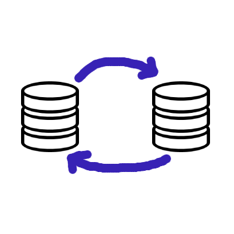

Electron SQLite - Building reactive desktop apps with RxDB and SQLite
Electron apps run on the user's device, so storing data locally is the natural way to build them. SQLite is the most proven embedded database and a great fit for Electron because it runs inside the app process, needs no server and stores everything in a single file.
But plain SQLite alone is not enough for a modern desktop application. It has no way to observe queries, no sync to a backend, no encryption and it can only run in the Electron main process, not in the renderer where your UI lives. This article shows how to combine SQLite with RxDB to get the reliability of SQLite together with reactive queries, replication and encryption, while keeping all heavy database work out of the UI process.

Why SQLite is a good fit for Electron
- No server process: SQLite is embedded. Your Electron app opens a database file directly, there is no port to expose and no binary to manage. Shipping a server database like PostgreSQL or MySQL inside an Electron bundle is not practical, as explained in the Electron database comparison.
- Single file storage: All data lives in one
.sqlitefile inside the app's user-data folder. Backups and debugging are simple. - Built into Node.js: Since Node.js version 22, the node:sqlite module ships with Node itself. Recent Electron versions include a Node.js runtime with this module, so you can use SQLite without native module rebuilds. Packages like
sqlite3orbetter-sqlite3require @electron/rebuild to compile against the Electron headers on every Electron upgrade. Withnode:sqlitethis whole step disappears. - Proven at scale: SQLite is the most deployed database in the world and Chromium itself uses it internally.
The two Electron processes and where the database belongs
An Electron app consists of two kinds of JavaScript runtimes:
- The main process: a Node.js process without a UI. It has full filesystem access and can load
node:sqlite. - One or more renderer processes: Chromium browser windows that render your UI. They have no direct SQLite access.
SQLite must run in the main process. Your UI code in the renderer then needs a way to read and write data across the process boundary via IPC. Doing this by hand means writing an IPC handler for every query, serializing results, and inventing your own change-notification system so that windows update when data changes. RxDB ships this wiring as a plugin, as shown below.
The problem with using SQLite directly
A hand-rolled setup looks like this: you open the database in the main process and answer queries over IPC.
// main process, without RxDB
import { DatabaseSync } from 'node:sqlite';
import { ipcMain } from 'electron';
const db = new DatabaseSync('/path/to/users.db');
db.exec('CREATE TABLE IF NOT EXISTS users(id TEXT PRIMARY KEY, name TEXT)');
ipcMain.handle('db-query', (event, sql, params) => {
return db.prepare(sql).all(...params);
});// renderer process, without RxDB
const rows = await ipcRenderer.invoke(
'db-query',
'SELECT * FROM users WHERE name = ?',
['alice']
);This works for a prototype, but several problems show up as the app grows:
- No reactivity: When one part of the app writes data, other components and other windows keep showing stale state. You have to build your own event system on top.
- Multiple windows: Each
BrowserWindowis its own renderer process. Keeping their UI state consistent requires broadcasting every change to every window. - No sync: Desktop users expect their data on other devices too. SQL gives you no replication protocol, no conflict handling and no offline queue.
- Manual schema and migration handling: Table definitions, indexes and migrations are all your responsibility.
- No type safety: Query results are untyped rows, so TypeScript cannot help you.
RxDB on top of SQLite
RxDB is a local-first, NoSQL database for JavaScript applications. It stores documents in collections, validates them against a JSON schema and exposes queries as RxJS observables. Through its swappable storage layer it can persist data in the SQLite RxStorage, which means you keep SQLite as the storage engine and gain:
- Reactive queries: Subscribe to a query and get a new result set each time the underlying data changes, across components and across windows.
- Realtime replication: The RxDB Sync Engine replicates with CouchDB, Firestore, GraphQL or any custom HTTP endpoint, including offline-first conflict handling.
- Encryption: Store sensitive fields encrypted on disk with the encryption plugins.
- Compression: Reduce storage size with key compression.
- TypeScript support: Typed documents, typed queries and typed results out of the box.

Why you should use the RxDB SQLite storage instead of SQLite by itself
With the RxDB SQLite storage you keep everything that makes SQLite attractive. The data still lives in a normal SQLite file on disk and the Premium SQLite RxStorage runs queries inside SQLite itself, using its JSON functions and real indexes. What changes is the layer your application code talks to:
| Concern | SQLite by itself | RxDB SQLite storage |
|---|---|---|
| Observe queries | Not possible | RxJS observables on any query |
| Access from renderer | Hand-written IPC handlers | Electron plugin |
| Multiple windows | Manual change broadcasting | Built in |
| Backend sync | Not included | Sync Engine |
| Conflict handling | Not included | Conflict handlers |
| Schema and migrations | Hand-written SQL | JSON schema and migration plugin |
| Encryption on disk | Requires paid SQLite extensions | Encryption plugin |
| Query results | Untyped rows | Typed documents |
Each row of the left column is code you would write and maintain yourself. The IPC layer alone tends to grow into a custom protocol with one handler per use case, and the change-notification logic that keeps several windows in sync is hard to get right. RxDB replaces all of it with a documented, tested API while SQLite keeps doing what it does best: storing bytes reliably in one file.
Setup: RxDB with SQLite in Electron
The recommended architecture runs the SQLite storage in the main process and connects each renderer window to it with the RxDB Electron plugin. The renderer creates a normal RxDatabase, while all SQLite operations happen in the main process and never block the UI.
RxDB ships a free trial version of the SQLite storage that you can use to evaluate the setup. For production apps, the full SQLite RxStorage is part of the RxDB Premium 👑 plugins.
1. Install RxDB
npm install rxdb rxjs2. Open the SQLite storage in the main process
Create the SQLite storage with the node:sqlite module and expose it to the renderer processes with exposeIpcMainRxStorage:
// main.js
import { app, ipcMain } from 'electron';
import { exposeIpcMainRxStorage } from 'rxdb/plugins/electron';
import {
getRxStorageSQLiteTrial,
getSQLiteBasicsNodeNative
} from 'rxdb/plugins/storage-sqlite';
import { DatabaseSync } from 'node:sqlite';
app.on('ready', () => {
exposeIpcMainRxStorage({
key: 'main-storage',
storage: getRxStorageSQLiteTrial({
sqliteBasics: getSQLiteBasicsNodeNative(DatabaseSync)
}),
ipcMain
});
/* ... open your BrowserWindow ... */
});The sqliteBasics adapter tells RxDB how to talk to the given SQLite library. Adapters for sqlite3, better-sqlite3 and others exist as well, see the SQLite RxStorage documentation.
3. Create the database in the renderer
// renderer.js
import { createRxDatabase } from 'rxdb';
import { getRxStorageIpcRenderer } from 'rxdb/plugins/electron';
import { ipcRenderer } from 'electron';
const db = await createRxDatabase({
name: 'heroesdb',
storage: getRxStorageIpcRenderer({
key: 'main-storage',
ipcRenderer
})
});
await db.addCollections({
heroes: {
schema: {
version: 0,
primaryKey: 'id',
type: 'object',
properties: {
id: { type: 'string', maxLength: 100 },
name: { type: 'string' },
color: { type: 'string' }
},
required: ['id', 'name', 'color']
}
}
});nodeIntegration must be enabled on the BrowserWindow so that the renderer can use ipcRenderer, see the Electron plugin docs.
4. Read and write data
// insert a document
await db.heroes.insert({
id: 'sqlite-hero',
name: 'Alice',
color: 'red'
});
// query once
const redHeroes = await db.heroes.find({
selector: { color: 'red' }
}).exec();
// observe a query
db.heroes.find({
selector: { color: 'red' }
}).$.subscribe(heroes => {
// emits on every change to the result set,
// also when the write came from another window
renderHeroList(heroes);
});This last snippet is the reason RxDB and SQLite work so well together in Electron. The write goes over IPC into SQLite in the main process, and every subscribed query in every window updates on its own. There is no custom IPC protocol to maintain and no stale UI state.
Production: the Premium SQLite storage
The trial storage passes the full RxDB test suite but is limited to 500 non-deleted documents, skips indexes and runs queries in memory. For production, switch to the Premium SQLite RxStorage, which uses real SQLite indexes and runs the queries inside SQLite with its JSON functions. The switch is a two-line change:
import {
getRxStorageSQLite,
getSQLiteBasicsNodeNative
} from 'rxdb-premium/plugins/storage-sqlite';
import { DatabaseSync } from 'node:sqlite';
const storage = getRxStorageSQLite({
sqliteBasics: getSQLiteBasicsNodeNative(DatabaseSync)
});Because the storage layer is swappable, none of your application code changes. You can also start development with the memory storage for fast test runs and use SQLite only in the packaged app.
Syncing the Electron SQLite database with a backend
Local SQLite data becomes more useful when it replicates. With the RxDB Sync Engine your Electron app pulls and pushes changes in realtime and keeps working offline. Writes land in SQLite first, the UI updates instantly and the replication catches up whenever the network allows it. Conflicts are detected and resolved with a conflict handler that you control.

A basic HTTP replication needs two endpoints on your server: one to pull document changes after a given checkpoint and one to push local change rows. On the client you wire them into replicateRxCollection:
import { replicateRxCollection } from 'rxdb/plugins/replication';
const replicationState = replicateRxCollection({
collection: db.heroes,
replicationIdentifier: 'my-http-replication',
pull: {
async handler(checkpointOrNull, batchSize) {
const updatedAt = checkpointOrNull
? checkpointOrNull.updatedAt : 0;
const id = checkpointOrNull ? checkpointOrNull.id : '';
const response = await fetch(
'https://example.com/api/pull' +
`?updatedAt=${updatedAt}&id=${id}&limit=${batchSize}`
);
const data = await response.json();
return {
documents: data.documents,
checkpoint: data.checkpoint
};
}
},
push: {
async handler(changeRows) {
const response = await fetch(
'https://example.com/api/push',
{
method: 'POST',
headers: { 'Content-Type': 'application/json' },
body: JSON.stringify(changeRows)
}
);
// the server responds with an array of conflicts
return await response.json();
}
}
});The pull handler fetches batches of changed documents from the server until the client is up to date. The push handler sends local writes and receives conflicting server states back, which RxDB then resolves with your conflict handler. For realtime updates from the server and the full server-side implementation, see the HTTP replication tutorial.
SQLite vs. the Node Filesystem storage
RxDB offers a second persistent storage for the Electron main process: the Filesystem Node RxStorage. Instead of one SQLite file it stores documents as plain JSON text files in a folder via the Node.js filesystem API.
In the performance comparison the filesystem storage is a bit faster than the SQLite storage. Wrapping SQLite adds overhead, and every operation pays latency for moving data between the JavaScript process and the SQLite engine. The filesystem storage skips that boundary and writes JSON directly to disk.
Reasons to still pick SQLite:
- Single file: One portable
.sqlitefile is easier to back up, copy and inspect than a folder tree of JSON files, and many tools can open it. - Same storage across platforms: If you also ship mobile apps with Capacitor or React Native, the SQLite storage works there too, so all your apps behave the same.
Reasons to pick the filesystem storage:
- Speed: Lower per-operation overhead, see the performance measurements.
- Simpler setup: No SQLite library and no
sqliteBasicsadapter needed.
Using it looks like this, again combined with the Electron IPC plugin in the main process:
import {
getRxStorageFilesystemNode
} from 'rxdb-premium/plugins/storage-filesystem-node';
import { app } from 'electron';
import path from 'path';
const storage = getRxStorageFilesystemNode({
basePath: path.join(app.getPath('userData'), 'database')
});Because the application code only sees the RxDB API, you can start with SQLite and move to the filesystem storage later (or the other way around) by exchanging the storage and running the storage migration.
Alternatives to SQLite in Electron
SQLite and the filesystem storage in the main process are the recommended defaults, but RxDB supports other storages that can make sense in specific setups:
- The IndexedDB RxStorage or LocalStorage RxStorage run directly in the renderer without any main-process code. Good for quick prototypes, slower for large datasets because IndexedDB has performance limits.
- The memory storage keeps everything in RAM, useful for tests or caches.
A broader comparison of the options is in the Electron database overview.
FAQ
Can I use SQLite in the Electron renderer process?
No. SQLite needs Node.js APIs that the renderer does not provide. The database must run in the main process. With the RxDB Electron plugin the renderer still gets a full database API because all operations are forwarded over IPC to the SQLite storage in the main process.
Do I need to rebuild native modules to use SQLite in Electron?
Not when you use the node:sqlite module that ships with Node.js 22 and newer, which recent Electron versions include. Third-party packages like sqlite3 or better-sqlite3 are native addons and must be rebuilt with @electron/rebuild whenever the Electron version changes.
Where is the SQLite file stored in an Electron app?
The database name you pass to createRxDatabase() maps to a SQLite file on disk. Place it inside Electron's user-data folder (from app.getPath('userData')) so it survives app updates and follows platform conventions on Windows, macOS and Linux.
Does RxDB support multiple Electron windows on one SQLite database?
Yes. Each BrowserWindow connects to the same main-process storage through getRxStorageIpcRenderer with the same key. Query subscriptions in one window emit new results when another window writes to the database.
Follow up
- Start with the RxDB Quickstart
- Read the full SQLite RxStorage documentation
- Check out the RxDB Electron example project
- Compare other databases for Electron